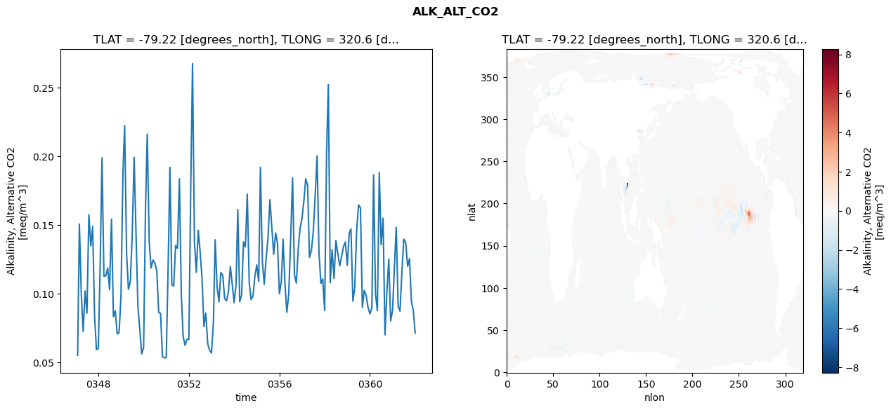
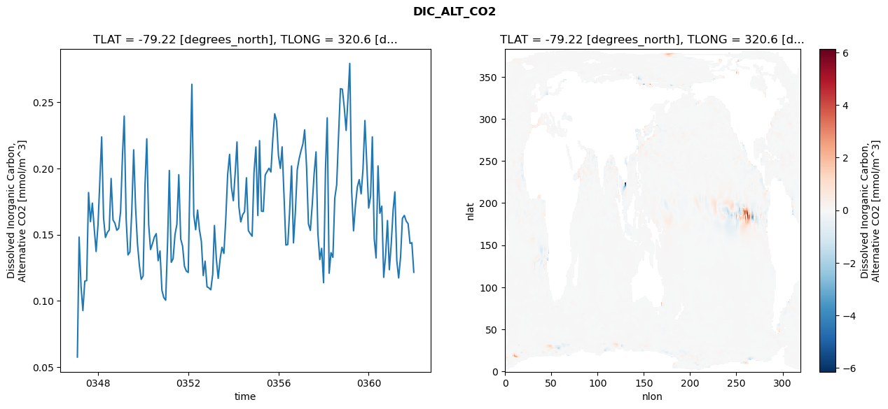
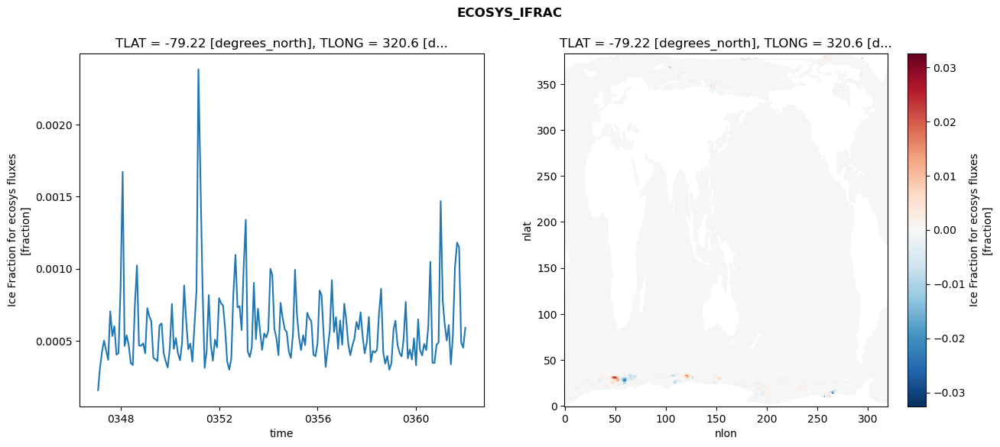
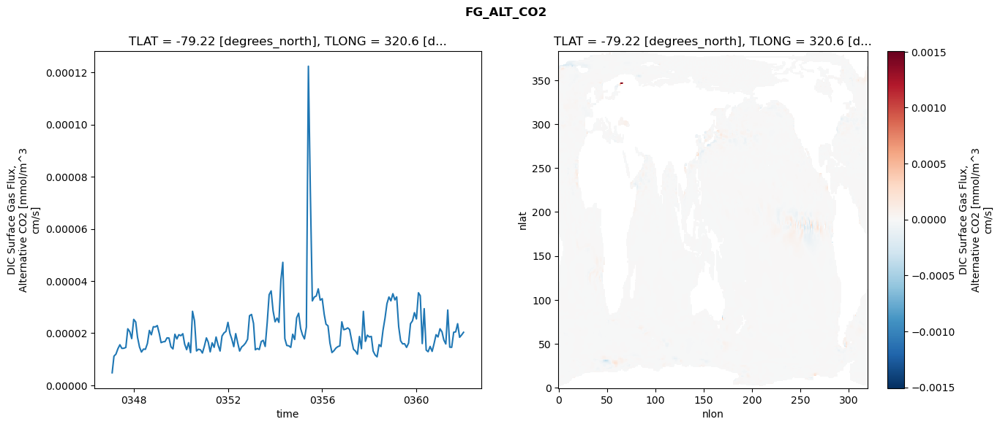

glb-dor_North_Atlantic_basin_015_1999-01-01_00060#
Simulation details#
Case: smyle.cdr-atlas-v0.glb-dor_North_Atlantic_basin_015_1999-01-01_00060.001
Basin: North_Atlantic_basin
Polygon: 15.0
Start date: 1999-01
Show code cell source Hide code cell source
import xarray as xr
import matplotlib.pyplot as plt
Show code cell source Hide code cell source
zarr_store = "/path/to/zarr/store"
# Parameters
zarr_store = "/global/cfs/projectdirs/m4746/Projects/Ocean-CDR-Atlas-v0/data/validation/smyle.cdr-atlas-v0.glb-dor_North_Atlantic_basin_015_1999-01-01_00060.001.validation.zarr"
Show code cell source Hide code cell source
%%time
ds_o = xr.open_zarr(zarr_store).compute()
ds_o
CPU times: user 662 ms, sys: 495 ms, total: 1.16 s
Wall time: 1.33 s
<xarray.Dataset> Size: 2MB
Dimensions: (nlat: 384, nlon: 320, time: 180)
Coordinates:
TLAT float64 8B -79.22
TLONG float64 8B 320.6
ULAT float64 8B -78.95
ULONG float64 8B 321.1
* time (time) object 1kB 0347-02-01 00:00:00 ... 0362-01-01 0...
z_t float32 4B 500.0
Dimensions without coordinates: nlat, nlon
Data variables:
ALK_ALT_CO2_diff (nlat, nlon) float32 492kB nan nan nan ... nan nan nan
ALK_ALT_CO2_rmse (time) float64 1kB 0.0552 0.1507 ... 0.08785 0.07136
DIC_ALT_CO2_diff (nlat, nlon) float32 492kB nan nan nan ... nan nan nan
DIC_ALT_CO2_rmse (time) float64 1kB 0.05743 0.1481 0.111 ... 0.1439 0.1216
ECOSYS_IFRAC_diff (nlat, nlon) float32 492kB nan nan nan ... nan nan nan
ECOSYS_IFRAC_rmse (time) float64 1kB 0.0001551 0.000307 ... 0.0005897
FG_ALT_CO2_diff (nlat, nlon) float32 492kB nan nan nan ... nan nan nan
FG_ALT_CO2_rmse (time) float64 1kB 4.825e-06 1.119e-05 ... 2.034e-05xarray.Dataset
- nlat: 384
- nlon: 320
- time: 180
- TLAT()float64-79.22
- long_name :
- array of t-grid latitudes
- units :
- degrees_north
array(-79.22052261)
- TLONG()float64320.6
- long_name :
- array of t-grid longitudes
- units :
- degrees_east
array(320.56250892)
- ULAT()float64-78.95
- long_name :
- array of u-grid latitudes
- units :
- degrees_north
array(-78.95289509)
- ULONG()float64321.1
- long_name :
- array of u-grid longitudes
- units :
- degrees_east
array(321.12500894)
- time(time)object0347-02-01 00:00:00 ... 0362-01-...
- bounds :
- time_bound
- long_name :
- time
array([cftime.DatetimeNoLeap(347, 2, 1, 0, 0, 0, 0, has_year_zero=True), cftime.DatetimeNoLeap(347, 3, 1, 0, 0, 0, 0, has_year_zero=True), cftime.DatetimeNoLeap(347, 4, 1, 0, 0, 0, 0, has_year_zero=True), cftime.DatetimeNoLeap(347, 5, 1, 0, 0, 0, 0, has_year_zero=True), cftime.DatetimeNoLeap(347, 6, 1, 0, 0, 0, 0, has_year_zero=True), cftime.DatetimeNoLeap(347, 7, 1, 0, 0, 0, 0, has_year_zero=True), cftime.DatetimeNoLeap(347, 8, 1, 0, 0, 0, 0, has_year_zero=True), cftime.DatetimeNoLeap(347, 9, 1, 0, 0, 0, 0, has_year_zero=True), cftime.DatetimeNoLeap(347, 10, 1, 0, 0, 0, 0, has_year_zero=True), cftime.DatetimeNoLeap(347, 11, 1, 0, 0, 0, 0, has_year_zero=True), cftime.DatetimeNoLeap(347, 12, 1, 0, 0, 0, 0, has_year_zero=True), cftime.DatetimeNoLeap(348, 1, 1, 0, 0, 0, 0, has_year_zero=True), cftime.DatetimeNoLeap(348, 2, 1, 0, 0, 0, 0, has_year_zero=True), cftime.DatetimeNoLeap(348, 3, 1, 0, 0, 0, 0, has_year_zero=True), cftime.DatetimeNoLeap(348, 4, 1, 0, 0, 0, 0, has_year_zero=True), cftime.DatetimeNoLeap(348, 5, 1, 0, 0, 0, 0, has_year_zero=True), cftime.DatetimeNoLeap(348, 6, 1, 0, 0, 0, 0, has_year_zero=True), cftime.DatetimeNoLeap(348, 7, 1, 0, 0, 0, 0, has_year_zero=True), cftime.DatetimeNoLeap(348, 8, 1, 0, 0, 0, 0, has_year_zero=True), cftime.DatetimeNoLeap(348, 9, 1, 0, 0, 0, 0, has_year_zero=True), cftime.DatetimeNoLeap(348, 10, 1, 0, 0, 0, 0, has_year_zero=True), cftime.DatetimeNoLeap(348, 11, 1, 0, 0, 0, 0, has_year_zero=True), cftime.DatetimeNoLeap(348, 12, 1, 0, 0, 0, 0, has_year_zero=True), cftime.DatetimeNoLeap(349, 1, 1, 0, 0, 0, 0, has_year_zero=True), cftime.DatetimeNoLeap(349, 2, 1, 0, 0, 0, 0, has_year_zero=True), cftime.DatetimeNoLeap(349, 3, 1, 0, 0, 0, 0, has_year_zero=True), cftime.DatetimeNoLeap(349, 4, 1, 0, 0, 0, 0, has_year_zero=True), cftime.DatetimeNoLeap(349, 5, 1, 0, 0, 0, 0, has_year_zero=True), cftime.DatetimeNoLeap(349, 6, 1, 0, 0, 0, 0, has_year_zero=True), cftime.DatetimeNoLeap(349, 7, 1, 0, 0, 0, 0, has_year_zero=True), cftime.DatetimeNoLeap(349, 8, 1, 0, 0, 0, 0, has_year_zero=True), cftime.DatetimeNoLeap(349, 9, 1, 0, 0, 0, 0, has_year_zero=True), cftime.DatetimeNoLeap(349, 10, 1, 0, 0, 0, 0, has_year_zero=True), cftime.DatetimeNoLeap(349, 11, 1, 0, 0, 0, 0, has_year_zero=True), cftime.DatetimeNoLeap(349, 12, 1, 0, 0, 0, 0, has_year_zero=True), cftime.DatetimeNoLeap(350, 1, 1, 0, 0, 0, 0, has_year_zero=True), cftime.DatetimeNoLeap(350, 2, 1, 0, 0, 0, 0, has_year_zero=True), cftime.DatetimeNoLeap(350, 3, 1, 0, 0, 0, 0, has_year_zero=True), cftime.DatetimeNoLeap(350, 4, 1, 0, 0, 0, 0, has_year_zero=True), cftime.DatetimeNoLeap(350, 5, 1, 0, 0, 0, 0, has_year_zero=True), cftime.DatetimeNoLeap(350, 6, 1, 0, 0, 0, 0, has_year_zero=True), cftime.DatetimeNoLeap(350, 7, 1, 0, 0, 0, 0, has_year_zero=True), cftime.DatetimeNoLeap(350, 8, 1, 0, 0, 0, 0, has_year_zero=True), cftime.DatetimeNoLeap(350, 9, 1, 0, 0, 0, 0, has_year_zero=True), cftime.DatetimeNoLeap(350, 10, 1, 0, 0, 0, 0, has_year_zero=True), cftime.DatetimeNoLeap(350, 11, 1, 0, 0, 0, 0, has_year_zero=True), cftime.DatetimeNoLeap(350, 12, 1, 0, 0, 0, 0, has_year_zero=True), cftime.DatetimeNoLeap(351, 1, 1, 0, 0, 0, 0, has_year_zero=True), cftime.DatetimeNoLeap(351, 2, 1, 0, 0, 0, 0, has_year_zero=True), cftime.DatetimeNoLeap(351, 3, 1, 0, 0, 0, 0, has_year_zero=True), cftime.DatetimeNoLeap(351, 4, 1, 0, 0, 0, 0, has_year_zero=True), cftime.DatetimeNoLeap(351, 5, 1, 0, 0, 0, 0, has_year_zero=True), cftime.DatetimeNoLeap(351, 6, 1, 0, 0, 0, 0, has_year_zero=True), cftime.DatetimeNoLeap(351, 7, 1, 0, 0, 0, 0, has_year_zero=True), cftime.DatetimeNoLeap(351, 8, 1, 0, 0, 0, 0, has_year_zero=True), cftime.DatetimeNoLeap(351, 9, 1, 0, 0, 0, 0, has_year_zero=True), cftime.DatetimeNoLeap(351, 10, 1, 0, 0, 0, 0, has_year_zero=True), cftime.DatetimeNoLeap(351, 11, 1, 0, 0, 0, 0, has_year_zero=True), cftime.DatetimeNoLeap(351, 12, 1, 0, 0, 0, 0, has_year_zero=True), cftime.DatetimeNoLeap(352, 1, 1, 0, 0, 0, 0, has_year_zero=True), cftime.DatetimeNoLeap(352, 2, 1, 0, 0, 0, 0, has_year_zero=True), cftime.DatetimeNoLeap(352, 3, 1, 0, 0, 0, 0, has_year_zero=True), cftime.DatetimeNoLeap(352, 4, 1, 0, 0, 0, 0, has_year_zero=True), cftime.DatetimeNoLeap(352, 5, 1, 0, 0, 0, 0, has_year_zero=True), cftime.DatetimeNoLeap(352, 6, 1, 0, 0, 0, 0, has_year_zero=True), cftime.DatetimeNoLeap(352, 7, 1, 0, 0, 0, 0, has_year_zero=True), cftime.DatetimeNoLeap(352, 8, 1, 0, 0, 0, 0, has_year_zero=True), cftime.DatetimeNoLeap(352, 9, 1, 0, 0, 0, 0, has_year_zero=True), cftime.DatetimeNoLeap(352, 10, 1, 0, 0, 0, 0, has_year_zero=True), cftime.DatetimeNoLeap(352, 11, 1, 0, 0, 0, 0, has_year_zero=True), cftime.DatetimeNoLeap(352, 12, 1, 0, 0, 0, 0, has_year_zero=True), cftime.DatetimeNoLeap(353, 1, 1, 0, 0, 0, 0, has_year_zero=True), cftime.DatetimeNoLeap(353, 2, 1, 0, 0, 0, 0, has_year_zero=True), cftime.DatetimeNoLeap(353, 3, 1, 0, 0, 0, 0, has_year_zero=True), cftime.DatetimeNoLeap(353, 4, 1, 0, 0, 0, 0, has_year_zero=True), cftime.DatetimeNoLeap(353, 5, 1, 0, 0, 0, 0, has_year_zero=True), cftime.DatetimeNoLeap(353, 6, 1, 0, 0, 0, 0, has_year_zero=True), cftime.DatetimeNoLeap(353, 7, 1, 0, 0, 0, 0, has_year_zero=True), cftime.DatetimeNoLeap(353, 8, 1, 0, 0, 0, 0, has_year_zero=True), cftime.DatetimeNoLeap(353, 9, 1, 0, 0, 0, 0, has_year_zero=True), cftime.DatetimeNoLeap(353, 10, 1, 0, 0, 0, 0, has_year_zero=True), cftime.DatetimeNoLeap(353, 11, 1, 0, 0, 0, 0, has_year_zero=True), cftime.DatetimeNoLeap(353, 12, 1, 0, 0, 0, 0, has_year_zero=True), cftime.DatetimeNoLeap(354, 1, 1, 0, 0, 0, 0, has_year_zero=True), cftime.DatetimeNoLeap(354, 2, 1, 0, 0, 0, 0, has_year_zero=True), cftime.DatetimeNoLeap(354, 3, 1, 0, 0, 0, 0, has_year_zero=True), cftime.DatetimeNoLeap(354, 4, 1, 0, 0, 0, 0, has_year_zero=True), cftime.DatetimeNoLeap(354, 5, 1, 0, 0, 0, 0, has_year_zero=True), cftime.DatetimeNoLeap(354, 6, 1, 0, 0, 0, 0, has_year_zero=True), cftime.DatetimeNoLeap(354, 7, 1, 0, 0, 0, 0, has_year_zero=True), cftime.DatetimeNoLeap(354, 8, 1, 0, 0, 0, 0, has_year_zero=True), cftime.DatetimeNoLeap(354, 9, 1, 0, 0, 0, 0, has_year_zero=True), cftime.DatetimeNoLeap(354, 10, 1, 0, 0, 0, 0, has_year_zero=True), cftime.DatetimeNoLeap(354, 11, 1, 0, 0, 0, 0, has_year_zero=True), cftime.DatetimeNoLeap(354, 12, 1, 0, 0, 0, 0, has_year_zero=True), cftime.DatetimeNoLeap(355, 1, 1, 0, 0, 0, 0, has_year_zero=True), cftime.DatetimeNoLeap(355, 2, 1, 0, 0, 0, 0, has_year_zero=True), cftime.DatetimeNoLeap(355, 3, 1, 0, 0, 0, 0, has_year_zero=True), cftime.DatetimeNoLeap(355, 4, 1, 0, 0, 0, 0, has_year_zero=True), cftime.DatetimeNoLeap(355, 5, 1, 0, 0, 0, 0, has_year_zero=True), cftime.DatetimeNoLeap(355, 6, 1, 0, 0, 0, 0, has_year_zero=True), cftime.DatetimeNoLeap(355, 7, 1, 0, 0, 0, 0, has_year_zero=True), cftime.DatetimeNoLeap(355, 8, 1, 0, 0, 0, 0, has_year_zero=True), cftime.DatetimeNoLeap(355, 9, 1, 0, 0, 0, 0, has_year_zero=True), cftime.DatetimeNoLeap(355, 10, 1, 0, 0, 0, 0, has_year_zero=True), cftime.DatetimeNoLeap(355, 11, 1, 0, 0, 0, 0, has_year_zero=True), cftime.DatetimeNoLeap(355, 12, 1, 0, 0, 0, 0, has_year_zero=True), cftime.DatetimeNoLeap(356, 1, 1, 0, 0, 0, 0, has_year_zero=True), cftime.DatetimeNoLeap(356, 2, 1, 0, 0, 0, 0, has_year_zero=True), cftime.DatetimeNoLeap(356, 3, 1, 0, 0, 0, 0, has_year_zero=True), cftime.DatetimeNoLeap(356, 4, 1, 0, 0, 0, 0, has_year_zero=True), cftime.DatetimeNoLeap(356, 5, 1, 0, 0, 0, 0, has_year_zero=True), cftime.DatetimeNoLeap(356, 6, 1, 0, 0, 0, 0, has_year_zero=True), cftime.DatetimeNoLeap(356, 7, 1, 0, 0, 0, 0, has_year_zero=True), cftime.DatetimeNoLeap(356, 8, 1, 0, 0, 0, 0, has_year_zero=True), cftime.DatetimeNoLeap(356, 9, 1, 0, 0, 0, 0, has_year_zero=True), cftime.DatetimeNoLeap(356, 10, 1, 0, 0, 0, 0, has_year_zero=True), cftime.DatetimeNoLeap(356, 11, 1, 0, 0, 0, 0, has_year_zero=True), cftime.DatetimeNoLeap(356, 12, 1, 0, 0, 0, 0, has_year_zero=True), cftime.DatetimeNoLeap(357, 1, 1, 0, 0, 0, 0, has_year_zero=True), cftime.DatetimeNoLeap(357, 2, 1, 0, 0, 0, 0, has_year_zero=True), cftime.DatetimeNoLeap(357, 3, 1, 0, 0, 0, 0, has_year_zero=True), cftime.DatetimeNoLeap(357, 4, 1, 0, 0, 0, 0, has_year_zero=True), cftime.DatetimeNoLeap(357, 5, 1, 0, 0, 0, 0, has_year_zero=True), cftime.DatetimeNoLeap(357, 6, 1, 0, 0, 0, 0, has_year_zero=True), cftime.DatetimeNoLeap(357, 7, 1, 0, 0, 0, 0, has_year_zero=True), cftime.DatetimeNoLeap(357, 8, 1, 0, 0, 0, 0, has_year_zero=True), cftime.DatetimeNoLeap(357, 9, 1, 0, 0, 0, 0, has_year_zero=True), cftime.DatetimeNoLeap(357, 10, 1, 0, 0, 0, 0, has_year_zero=True), cftime.DatetimeNoLeap(357, 11, 1, 0, 0, 0, 0, has_year_zero=True), cftime.DatetimeNoLeap(357, 12, 1, 0, 0, 0, 0, has_year_zero=True), cftime.DatetimeNoLeap(358, 1, 1, 0, 0, 0, 0, has_year_zero=True), cftime.DatetimeNoLeap(358, 2, 1, 0, 0, 0, 0, has_year_zero=True), cftime.DatetimeNoLeap(358, 3, 1, 0, 0, 0, 0, has_year_zero=True), cftime.DatetimeNoLeap(358, 4, 1, 0, 0, 0, 0, has_year_zero=True), cftime.DatetimeNoLeap(358, 5, 1, 0, 0, 0, 0, has_year_zero=True), cftime.DatetimeNoLeap(358, 6, 1, 0, 0, 0, 0, has_year_zero=True), cftime.DatetimeNoLeap(358, 7, 1, 0, 0, 0, 0, has_year_zero=True), cftime.DatetimeNoLeap(358, 8, 1, 0, 0, 0, 0, has_year_zero=True), cftime.DatetimeNoLeap(358, 9, 1, 0, 0, 0, 0, has_year_zero=True), cftime.DatetimeNoLeap(358, 10, 1, 0, 0, 0, 0, has_year_zero=True), cftime.DatetimeNoLeap(358, 11, 1, 0, 0, 0, 0, has_year_zero=True), cftime.DatetimeNoLeap(358, 12, 1, 0, 0, 0, 0, has_year_zero=True), cftime.DatetimeNoLeap(359, 1, 1, 0, 0, 0, 0, has_year_zero=True), cftime.DatetimeNoLeap(359, 2, 1, 0, 0, 0, 0, has_year_zero=True), cftime.DatetimeNoLeap(359, 3, 1, 0, 0, 0, 0, has_year_zero=True), cftime.DatetimeNoLeap(359, 4, 1, 0, 0, 0, 0, has_year_zero=True), cftime.DatetimeNoLeap(359, 5, 1, 0, 0, 0, 0, has_year_zero=True), cftime.DatetimeNoLeap(359, 6, 1, 0, 0, 0, 0, has_year_zero=True), cftime.DatetimeNoLeap(359, 7, 1, 0, 0, 0, 0, has_year_zero=True), cftime.DatetimeNoLeap(359, 8, 1, 0, 0, 0, 0, has_year_zero=True), cftime.DatetimeNoLeap(359, 9, 1, 0, 0, 0, 0, has_year_zero=True), cftime.DatetimeNoLeap(359, 10, 1, 0, 0, 0, 0, has_year_zero=True), cftime.DatetimeNoLeap(359, 11, 1, 0, 0, 0, 0, has_year_zero=True), cftime.DatetimeNoLeap(359, 12, 1, 0, 0, 0, 0, has_year_zero=True), cftime.DatetimeNoLeap(360, 1, 1, 0, 0, 0, 0, has_year_zero=True), cftime.DatetimeNoLeap(360, 2, 1, 0, 0, 0, 0, has_year_zero=True), cftime.DatetimeNoLeap(360, 3, 1, 0, 0, 0, 0, has_year_zero=True), cftime.DatetimeNoLeap(360, 4, 1, 0, 0, 0, 0, has_year_zero=True), cftime.DatetimeNoLeap(360, 5, 1, 0, 0, 0, 0, has_year_zero=True), cftime.DatetimeNoLeap(360, 6, 1, 0, 0, 0, 0, has_year_zero=True), cftime.DatetimeNoLeap(360, 7, 1, 0, 0, 0, 0, has_year_zero=True), cftime.DatetimeNoLeap(360, 8, 1, 0, 0, 0, 0, has_year_zero=True), cftime.DatetimeNoLeap(360, 9, 1, 0, 0, 0, 0, has_year_zero=True), cftime.DatetimeNoLeap(360, 10, 1, 0, 0, 0, 0, has_year_zero=True), cftime.DatetimeNoLeap(360, 11, 1, 0, 0, 0, 0, has_year_zero=True), cftime.DatetimeNoLeap(360, 12, 1, 0, 0, 0, 0, has_year_zero=True), cftime.DatetimeNoLeap(361, 1, 1, 0, 0, 0, 0, has_year_zero=True), cftime.DatetimeNoLeap(361, 2, 1, 0, 0, 0, 0, has_year_zero=True), cftime.DatetimeNoLeap(361, 3, 1, 0, 0, 0, 0, has_year_zero=True), cftime.DatetimeNoLeap(361, 4, 1, 0, 0, 0, 0, has_year_zero=True), cftime.DatetimeNoLeap(361, 5, 1, 0, 0, 0, 0, has_year_zero=True), cftime.DatetimeNoLeap(361, 6, 1, 0, 0, 0, 0, has_year_zero=True), cftime.DatetimeNoLeap(361, 7, 1, 0, 0, 0, 0, has_year_zero=True), cftime.DatetimeNoLeap(361, 8, 1, 0, 0, 0, 0, has_year_zero=True), cftime.DatetimeNoLeap(361, 9, 1, 0, 0, 0, 0, has_year_zero=True), cftime.DatetimeNoLeap(361, 10, 1, 0, 0, 0, 0, has_year_zero=True), cftime.DatetimeNoLeap(361, 11, 1, 0, 0, 0, 0, has_year_zero=True), cftime.DatetimeNoLeap(361, 12, 1, 0, 0, 0, 0, has_year_zero=True), cftime.DatetimeNoLeap(362, 1, 1, 0, 0, 0, 0, has_year_zero=True)], dtype=object) - z_t()float32500.0
- long_name :
- depth from surface to midpoint of layer
- positive :
- down
- units :
- centimeters
- valid_max :
- 537500.0
- valid_min :
- 500.0
array(500., dtype=float32)
- ALK_ALT_CO2_diff(nlat, nlon)float32nan nan nan nan ... nan nan nan nan
- cell_methods :
- time: mean
- grid_loc :
- 3111
- long_name :
- Alkalinity, Alternative CO2
- units :
- meq/m^3
array([[ nan, nan, nan, ..., nan, nan, nan], [ nan, nan, nan, ..., nan, nan, nan], [0.06079102, 0.02856445, 0.0144043 , ..., nan, nan, nan], ..., [ nan, nan, nan, ..., nan, nan, nan], [ nan, nan, nan, ..., nan, nan, nan], [ nan, nan, nan, ..., nan, nan, nan]], dtype=float32) - ALK_ALT_CO2_rmse(time)float640.0552 0.1507 ... 0.08785 0.07136
- cell_methods :
- time: mean
- grid_loc :
- 3111
- long_name :
- Alkalinity, Alternative CO2
- units :
- meq/m^3
array([0.05519889, 0.15070728, 0.09968024, 0.07250709, 0.10196382, 0.08581382, 0.15737217, 0.13479455, 0.14897268, 0.08397461, 0.05935142, 0.06026503, 0.12518092, 0.19876826, 0.11273 , 0.11291332, 0.11871668, 0.10292414, 0.15422996, 0.08319029, 0.08752814, 0.07076508, 0.07161757, 0.09808657, 0.18704534, 0.2222555 , 0.12988194, 0.10316995, 0.10896561, 0.14250355, 0.19913551, 0.14280871, 0.09069099, 0.07382044, 0.05616339, 0.06098237, 0.16341641, 0.21604039, 0.13775594, 0.1187664 , 0.12445536, 0.12225316, 0.117085 , 0.08641373, 0.08576412, 0.05416722, 0.05325844, 0.05363903, 0.12059799, 0.1918895 , 0.1064252 , 0.10556429, 0.13501434, 0.13303864, 0.18352671, 0.0990413 , 0.06888846, 0.06238379, 0.06672149, 0.06686459, 0.17974922, 0.26734413, 0.13761458, 0.11561665, 0.1460373 , 0.13074825, 0.11118219, 0.07610283, 0.08591287, 0.0634927 , 0.05888166, 0.05682807, 0.07960441, 0.13919237, 0.10488784, 0.09403747, 0.11542362, 0.11344086, 0.09649192, 0.0948014 , 0.10158162, 0.11987167, 0.10693097, 0.0935529 , 0.10684334, 0.1612386 , 0.09413107, 0.09884559, 0.13762057, 0.13406001, 0.17237082, 0.10834658, 0.09579522, 0.09818026, 0.11267188, 0.12093176, 0.10895457, 0.19193114, 0.12381437, 0.10680954, 0.12562157, 0.14048629, 0.16824897, 0.148393 , 0.12863171, 0.14420623, 0.1368006 , 0.09990581, 0.10896255, 0.13960362, 0.10679987, 0.08647935, 0.09990596, 0.13902252, 0.18420356, 0.11391579, 0.10769261, 0.13291856, 0.14780132, 0.15477379, 0.16796332, 0.18357101, 0.17872012, 0.12652645, 0.13129335, 0.14503154, 0.1715939 , 0.2002424 , 0.13030542, 0.10750038, 0.11075579, 0.08773668, 0.20255609, 0.25208416, 0.10804853, 0.13198791, 0.11103445, 0.13870889, 0.12922563, 0.12019907, 0.12699598, 0.13435678, 0.13757791, 0.12055798, 0.14397982, 0.14704913, 0.09454961, 0.10430341, 0.14574253, 0.16458974, 0.16231987, 0.09012186, 0.1023773 , 0.09884683, 0.09012738, 0.08530028, 0.08956963, 0.18636581, 0.09971474, 0.08771592, 0.18825756, 0.13564708, 0.15485947, 0.07008482, 0.1008788 , 0.12507778, 0.08025946, 0.08785919, 0.12038603, 0.14827965, 0.09110486, 0.08735725, 0.11614433, 0.13966247, 0.1371955 , 0.11986361, 0.12546521, 0.09455677, 0.08785033, 0.07135726]) - DIC_ALT_CO2_diff(nlat, nlon)float32nan nan nan nan ... nan nan nan nan
- cell_methods :
- time: mean
- grid_loc :
- 3111
- long_name :
- Dissolved Inorganic Carbon, Alternative CO2
- units :
- mmol/m^3
array([[ nan, nan, nan, ..., nan, nan, nan], [ nan, nan, nan, ..., nan, nan, nan], [0.06982422, 0.03198242, 0.01660156, ..., nan, nan, nan], ..., [ nan, nan, nan, ..., nan, nan, nan], [ nan, nan, nan, ..., nan, nan, nan], [ nan, nan, nan, ..., nan, nan, nan]], dtype=float32) - DIC_ALT_CO2_rmse(time)float640.05743 0.1481 ... 0.1439 0.1216
- cell_methods :
- time: mean
- grid_loc :
- 3111
- long_name :
- Dissolved Inorganic Carbon, Alternative CO2
- units :
- mmol/m^3
array([0.05743449, 0.14813031, 0.11095056, 0.09255382, 0.11486668, 0.11521481, 0.18183077, 0.15982763, 0.17382573, 0.15440137, 0.1372531 , 0.15766776, 0.19225908, 0.22385179, 0.16258502, 0.14784717, 0.1516306 , 0.15349099, 0.19246267, 0.16105922, 0.15871689, 0.1533159 , 0.15467306, 0.16735066, 0.20995838, 0.23960452, 0.16220784, 0.13465606, 0.13688824, 0.16747659, 0.21412957, 0.17033198, 0.14338011, 0.12685597, 0.11618946, 0.11878343, 0.18804784, 0.22247153, 0.15747391, 0.13871959, 0.14313567, 0.14810955, 0.15076665, 0.13032817, 0.13762336, 0.10801271, 0.10240053, 0.10042597, 0.1444306 , 0.19853535, 0.12906837, 0.13175647, 0.15015667, 0.15771174, 0.19531087, 0.14671345, 0.14144172, 0.12597565, 0.12248583, 0.12140907, 0.20154993, 0.26367763, 0.16471371, 0.15371852, 0.16853565, 0.15378863, 0.14496395, 0.11908311, 0.12991909, 0.11055212, 0.10977321, 0.10829516, 0.12001458, 0.15687369, 0.13135734, 0.11692462, 0.13156892, 0.14045725, 0.13575538, 0.16254305, 0.19555378, 0.21066894, 0.18572987, 0.17561911, 0.19753265, 0.22007041, 0.17106088, 0.15962976, 0.16510738, 0.16727251, 0.1929829 , 0.15304896, 0.15082655, 0.14879065, 0.19669461, 0.21626708, 0.16446419, 0.22104782, 0.1677155 , 0.16755518, 0.19520109, 0.19766904, 0.20022372, 0.19737275, 0.22221061, 0.24131742, 0.23608813, 0.2097732 , 0.20007511, 0.21636877, 0.17942876, 0.14212873, 0.14257837, 0.16792146, 0.20191941, 0.14375082, 0.16674449, 0.19891546, 0.20721553, 0.21341479, 0.21871234, 0.22924339, 0.20098888, 0.15819027, 0.15317332, 0.17223079, 0.19586622, 0.21257442, 0.15085267, 0.13112976, 0.13961644, 0.11363516, 0.1994768 , 0.23830064, 0.12079674, 0.13636235, 0.13280138, 0.17750742, 0.18764084, 0.22546426, 0.26035954, 0.25990744, 0.2465453 , 0.22877481, 0.2536963 , 0.27943299, 0.18228035, 0.15289016, 0.17221864, 0.18592028, 0.19158315, 0.18080929, 0.19958374, 0.23625801, 0.2041615 , 0.1700938 , 0.17919119, 0.2238943 , 0.14664257, 0.13238126, 0.20197218, 0.16616968, 0.17151781, 0.11771894, 0.13374625, 0.160662 , 0.12346959, 0.14318299, 0.16893958, 0.18228366, 0.13029506, 0.1172445 , 0.13317751, 0.1623277 , 0.16452092, 0.16018178, 0.15826458, 0.14336006, 0.1438953 , 0.12155266]) - ECOSYS_IFRAC_diff(nlat, nlon)float32nan nan nan nan ... nan nan nan nan
- cell_methods :
- time: mean
- grid_loc :
- 2110
- long_name :
- Ice Fraction for ecosys fluxes
- units :
- fraction
array([[ nan, nan, nan, ..., nan, nan, nan], [ nan, nan, nan, ..., nan, nan, nan], [ 2.86400318e-04, 1.08242035e-04, -6.97374344e-05, ..., nan, nan, nan], ..., [ nan, nan, nan, ..., nan, nan, nan], [ nan, nan, nan, ..., nan, nan, nan], [ nan, nan, nan, ..., nan, nan, nan]], dtype=float32) - ECOSYS_IFRAC_rmse(time)float640.0001551 0.000307 ... 0.0005897
- cell_methods :
- time: mean
- grid_loc :
- 2110
- long_name :
- Ice Fraction for ecosys fluxes
- units :
- fraction
array([0.0001551 , 0.00030701, 0.00042301, 0.00050059, 0.00043007, 0.00036607, 0.00070415, 0.00053175, 0.00060055, 0.00040252, 0.00041285, 0.00087163, 0.00167314, 0.00046219, 0.00053759, 0.00047049, 0.00034492, 0.00033054, 0.0007518 , 0.0010226 , 0.0004657 , 0.00046433, 0.00048155, 0.00041135, 0.00072572, 0.00067106, 0.0006347 , 0.00038184, 0.00037047, 0.00035788, 0.00060545, 0.00061978, 0.00041566, 0.00035554, 0.00031307, 0.00044909, 0.00075491, 0.00044305, 0.0005172 , 0.00041188, 0.00036362, 0.00048104, 0.00088377, 0.00063528, 0.00043996, 0.00047893, 0.00035436, 0.00060331, 0.00085594, 0.00238514, 0.00159378, 0.00086884, 0.00030995, 0.00042923, 0.00081619, 0.00047086, 0.00035997, 0.00050756, 0.00045292, 0.00079573, 0.00075782, 0.00074446, 0.00058053, 0.00035532, 0.00029788, 0.0003745 , 0.00082659, 0.00109633, 0.00073082, 0.00073891, 0.00057327, 0.00101606, 0.00134005, 0.00042635, 0.00038584, 0.00045316, 0.00090112, 0.00050984, 0.00072171, 0.0005598 , 0.00043587, 0.00055003, 0.00052118, 0.0005692 , 0.00099903, 0.00095657, 0.00058183, 0.00051631, 0.00039905, 0.00076229, 0.00065941, 0.00057902, 0.00055936, 0.00042397, 0.00038009, 0.00054137, 0.00099252, 0.00068397, 0.00052352, 0.00043369, 0.00053757, 0.00046876, 0.00069326, 0.00065593, 0.0006332 , 0.00040244, 0.00039061, 0.00048192, 0.00084901, 0.00081465, 0.00054332, 0.00031706, 0.00045017, 0.00056817, 0.00091935, 0.00056025, 0.0006629 , 0.00044302, 0.00063984, 0.00047039, 0.00075683, 0.00064732, 0.00047743, 0.00039788, 0.00046592, 0.00051327, 0.0006296 , 0.00057878, 0.0006971 , 0.00052491, 0.00041198, 0.00048882, 0.00066487, 0.00035087, 0.00042814, 0.00041714, 0.00043576, 0.00068906, 0.00086021, 0.00042071, 0.00033953, 0.00039297, 0.00029726, 0.0003435 , 0.0005769 , 0.00063826, 0.00047113, 0.00041482, 0.00038987, 0.00051382, 0.00076874, 0.00037719, 0.00043822, 0.00036904, 0.00051523, 0.00032879, 0.00064843, 0.0004337 , 0.00039698, 0.0004764 , 0.00043386, 0.00059596, 0.00104842, 0.00034522, 0.00034442, 0.00047144, 0.00048595, 0.00146952, 0.00077523, 0.00061602, 0.00050083, 0.0006075 , 0.00033455, 0.0005363 , 0.00101132, 0.00118093, 0.00114772, 0.00048675, 0.00045065, 0.00058969]) - FG_ALT_CO2_diff(nlat, nlon)float32nan nan nan nan ... nan nan nan nan
- cell_methods :
- time: mean
- grid_loc :
- 2110
- long_name :
- DIC Surface Gas Flux, Alternative CO2
- units :
- mmol/m^3 cm/s
array([[ nan, nan, nan, ..., nan, nan, nan], [ nan, nan, nan, ..., nan, nan, nan], [-6.5838321e-08, 1.8460014e-08, 1.1851671e-07, ..., nan, nan, nan], ..., [ nan, nan, nan, ..., nan, nan, nan], [ nan, nan, nan, ..., nan, nan, nan], [ nan, nan, nan, ..., nan, nan, nan]], dtype=float32) - FG_ALT_CO2_rmse(time)float644.825e-06 1.119e-05 ... 2.034e-05
- cell_methods :
- time: mean
- grid_loc :
- 2110
- long_name :
- DIC Surface Gas Flux, Alternative CO2
- units :
- mmol/m^3 cm/s
array([4.82509492e-06, 1.11864218e-05, 1.20018306e-05, 1.40487473e-05, 1.55697241e-05, 1.41813723e-05, 1.42219158e-05, 1.45481793e-05, 2.16927974e-05, 2.05984183e-05, 1.79248511e-05, 2.52989918e-05, 2.42990544e-05, 1.84378276e-05, 1.46760258e-05, 1.27755580e-05, 1.39017436e-05, 1.38228172e-05, 1.60496292e-05, 2.10651539e-05, 1.93950269e-05, 2.24780971e-05, 2.24157893e-05, 2.29157420e-05, 1.98748500e-05, 1.63834900e-05, 1.66971954e-05, 1.67910656e-05, 1.82092288e-05, 1.81480609e-05, 1.47788733e-05, 1.39731150e-05, 1.95940131e-05, 1.78078703e-05, 1.94324632e-05, 1.90274061e-05, 1.97948523e-05, 1.58247126e-05, 1.36926264e-05, 1.63775497e-05, 1.25566456e-05, 2.83884982e-05, 2.47298491e-05, 1.31852724e-05, 1.38551563e-05, 1.36305177e-05, 1.23987641e-05, 1.50616988e-05, 1.81997307e-05, 1.65915563e-05, 1.28427925e-05, 1.63213040e-05, 1.45891486e-05, 1.85378296e-05, 1.54587416e-05, 1.31668908e-05, 1.89230019e-05, 2.01042984e-05, 2.06834119e-05, 2.41610598e-05, 1.98841512e-05, 1.77815145e-05, 1.48399937e-05, 1.98381631e-05, 1.63010469e-05, 1.31565984e-05, 1.47014074e-05, 1.53568316e-05, 1.62481573e-05, 1.76870234e-05, 2.67117973e-05, 2.71872318e-05, 2.37512852e-05, 1.36523705e-05, 1.41440120e-05, 1.37256843e-05, 1.68055044e-05, 1.72617900e-05, 1.49082738e-05, 2.40829548e-05, ... 1.22351490e-04, 7.48452257e-05, 3.23826965e-05, 3.38723953e-05, 3.42574506e-05, 3.70103881e-05, 3.26675402e-05, 3.32299922e-05, 2.72258172e-05, 2.34520063e-05, 2.28290430e-05, 1.62246441e-05, 1.25885437e-05, 1.32668963e-05, 1.42765362e-05, 1.48625993e-05, 1.51271802e-05, 2.43497932e-05, 2.13360874e-05, 2.15814842e-05, 2.20377141e-05, 2.14105772e-05, 1.73601937e-05, 1.38309370e-05, 1.31241690e-05, 1.19382929e-05, 1.87297466e-05, 1.40740153e-05, 2.83724086e-05, 1.68647100e-05, 1.92371882e-05, 1.85700850e-05, 1.87688155e-05, 1.31669011e-05, 1.16495008e-05, 1.09363122e-05, 1.56155028e-05, 1.48711533e-05, 2.11195776e-05, 2.57604021e-05, 3.13107660e-05, 3.38816900e-05, 3.23979885e-05, 3.51429151e-05, 3.27703975e-05, 3.39286212e-05, 2.25177632e-05, 1.70882356e-05, 1.59108985e-05, 1.59641365e-05, 1.45662248e-05, 1.62116127e-05, 2.36401903e-05, 2.47669620e-05, 2.78746212e-05, 2.54690227e-05, 3.55028817e-05, 3.43763568e-05, 1.60241724e-05, 2.94046229e-05, 1.35393118e-05, 1.29121777e-05, 1.49281688e-05, 1.30298875e-05, 1.59950504e-05, 1.94300664e-05, 1.85639858e-05, 2.16952304e-05, 2.05148318e-05, 1.74140757e-05, 1.58658771e-05, 2.88899584e-05, 1.46464043e-05, 1.45815125e-05, 2.03643043e-05, 2.05126636e-05, 2.36465147e-05, 1.84253649e-05, 1.93027363e-05, 2.03442216e-05])
- timePandasIndex
PandasIndex(CFTimeIndex([0347-02-01 00:00:00, 0347-03-01 00:00:00, 0347-04-01 00:00:00, 0347-05-01 00:00:00, 0347-06-01 00:00:00, 0347-07-01 00:00:00, 0347-08-01 00:00:00, 0347-09-01 00:00:00, 0347-10-01 00:00:00, 0347-11-01 00:00:00, ... 0361-04-01 00:00:00, 0361-05-01 00:00:00, 0361-06-01 00:00:00, 0361-07-01 00:00:00, 0361-08-01 00:00:00, 0361-09-01 00:00:00, 0361-10-01 00:00:00, 0361-11-01 00:00:00, 0361-12-01 00:00:00, 0362-01-01 00:00:00], dtype='object', length=180, calendar='noleap', freq='MS'))
Show code cell source Hide code cell source
variables = [v[:-5] for v in ds_o.variables if "_rmse" in v]
Show code cell source Hide code cell source
plt.rcParams.update({'figure.max_open_warning': 0})
for v in variables:
fig, axs = plt.subplots(1, 2, figsize=(15, 6))
ds_o[f"{v}_rmse"].plot(ax=axs[0])
ds_o[f"{v}_diff"].plot(ax=axs[1])
plt.suptitle(v, fontweight="bold")



